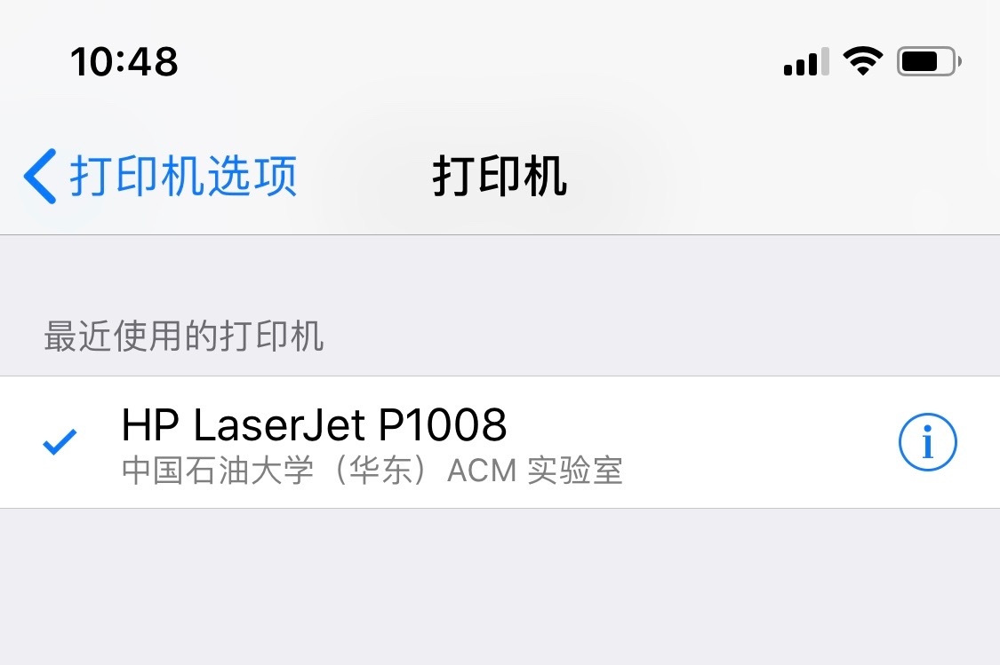

ACM 实验室打印机使用 & 异常处理
复制链接：http://printer.upcacm.club/printers/HP-LaserJet-P1008，下一步会用到
跟随视频中的步骤即可
复制链接：http://printer.upcacm.club/printers/HP-LaserJet-P1008，下一步会用到
跟随视频中的步骤
复制链接：ipp://printer.upcacm.club:631/printers/HP-LaserJet-P1008，下一步会用到
跟随视频中的步骤
iOS 设备在连接至实验室名为 ACMCLUB 的 Wi-Fi 后，可直接通过 AirPrint（隔空打印）进行打印，无需任何准备，详见：

如果出现打印机缺纸，请严格按照 2.1.1 ~ 2.1.3 进行操作，不要做任何多余的动作。之后打印机会进行异常恢复，随后继续打印因为缺纸而中断的任务
请放入足够多的纸张

这是因为硒鼓中的墨粉用完的缘故，请联系学长
1 GB，超过这个大小会打印失败| 名称 | 值 |
|---|---|
| 型号 | HP LaserJet P1008 |
| 是否支持自动双面 | 否 |
| 是否支持彩色打印 | 否 |